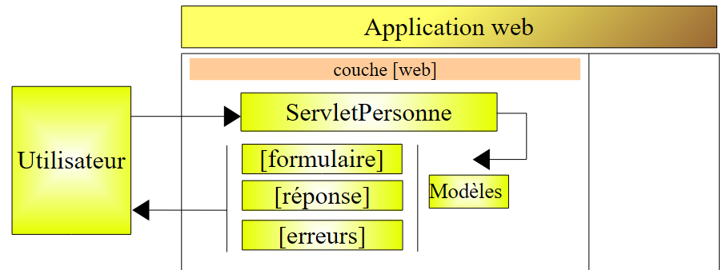

5. Application web MVC [personne] – version 1
5.1. Les vues de l'application
L'application reprend le formulaire utilisé dans les précédents exemples. La première page de l'application est la suivante :

Nous appellerons cette vue, la vue [formulaire]. Si on fait des saisies correctes, celles-ci sont affichées dans une vue qui sera appelée [réponse] :

Si les saisies sont incorrectes, les erreurs sont signalées dans une vue appelée [erreurs] :

5.2. Architecture de l'application
L'application web [personne1] aura l'architecture suivante :

Cette architecture est une architecture 1tier : il n'y a pas de couches [métier] ou [dao], seulement une couche [web]. [ServletPersonne] est le contrôleur de l'application qui traite toutes les requêtes des clients. Pour répondre à ceux-ci, il utilise l'une des trois vues [formulaire, réponse, erreurs].
Il nous faut déterminer comment le contrôleur [ServletPersonne] détermine l'action qu'il doit faire à la réception d'une requête d'un utilisateur. Une requête client est un flux HTTP qui diffère selon qu'elle est faite avec une commande GET ou POST.
Requête GET
Dans ce cas, le flux HTTP ressemble à ce qui suit :
La ligne 1 précise l'url demandée, par exemple :
On peut utiliser cette url pour préciser l'action à faire. On peut utiliser diverses méthodes :
- un paramètre de l'url précise l'action, par exemple [/appli?action=ajouter&id=4]. Ici le paramètre [action] indique au contrôleur l'action qui lui est demandée.
- le dernier élément de l'url précise l'action, par exemple [/appli/ajouter?id=4]. Ici, le dernier élément de l'url [/ajouter] est utilisé par le contrôleur pour déterminer l'action qu'il doit faire.
D'autres solutions sont possibles. Les deux précédentes sont courantes.
Requête POST
Dans ce cas, le flux HTTP ressemble à ce qui suit :
La ligne 1 précise l'url demandée, par exemple :
On peut utiliser cette url pour préciser l'action à faire comme pour le GET. Dans le cas du GET, le paramètre [action] était intégrée dans l'URL. Cela peut être également le cas ici comme dans :
Mais le paramètre [action] peut être également inclus dans les paramètres postés (ligne 15 ci-dessus) comme dans :
Dans ce qui suit, nous utiliserons ces différentes techniques pour indiquer au contrôleur ce qu'il doit faire :
- intégrer le paramètre action dans l'url demandée :
- poster le paramètre action :
- utiliser le dernier élément de l'url comme nom de l'action :
5.3. Le projet Eclipse
Pour créer le projet Eclipse [mvc-personne-01] de l'application web [personne1], on suivra la démarche décrite au paragraphe 3.1.

On ne gardera pas le contexte [mvc-personne-01] proposé par défaut. On choisira [personne1] comme indiqué ci-dessous :

Le résultat obtenu est le suivant :

Si d'aventure, on veut changer le contexte de l'application web, on outilisera l'option [clic droit sur projet -> Properties -> J2EE] :

On indiquera en [1] le nouveau contexte.
Nous allons créer un sous-dossier [vues] dans le dossier [WEB-INF] : [clic droit sur WEB-INF -> New -> Folder] :
 |  |
Le nouveau projet est maintenant celui-ci :

Une fois complété, le projet sera le suivant :

- le contrôleur [ServletPersonne] est dans le dossier [src]
- les pages JSP des vues [formulaire, réponse, erreurs] sont dans le dossier [WEB-INF/vues], ce qui empêche l'utilisateur de les demander directement comme le montre l'exemple ci-dessous :

Nous décrivons maintenant les différents composants de l'application web [/personne1]. Le lecteur est invité à les créer au fil de sa lecture.
5.4. Configuration de l'application web [personne1]
Le fichier web.xml de l'application /personne1 sera le suivant :
<?xml version="1.0" encoding="UTF-8"?>
<web-app id="WebApp_ID" version="2.4"
xmlns="http://java.sun.com/xml/ns/j2ee"
xmlns:xsi="http://www.w3.org/2001/XMLSchema-instance"
xsi:schemaLocation="http://java.sun.com/xml/ns/j2ee http://java.sun.com/xml/ns/j2ee/web-app_2_4.xsd">
<display-name>mvc-personne-01</display-name>
<!-- ServletPersonne -->
<servlet>
<servlet-name>personne</servlet-name>
<servlet-class>
istia.st.servlets.personne.ServletPersonne
</servlet-class>
<init-param>
<param-name>urlReponse</param-name>
<param-value>
/WEB-INF/vues/reponse.jsp
</param-value>
</init-param>
<init-param>
<param-name>urlErreurs</param-name>
<param-value>
/WEB-INF/vues/erreurs.jsp
</param-value>
</init-param>
<init-param>
<param-name>urlFormulaire</param-name>
<param-value>
/WEB-INF/vues/formulaire.jsp
</param-value>
</init-param>
</servlet>
<!-- Mapping ServletPersonne-->
<servlet-mapping>
<servlet-name>personne</servlet-name>
<url-pattern>/main</url-pattern>
</servlet-mapping>
<!-- fichiers d'accueil -->
<welcome-file-list>
<welcome-file>index.jsp</welcome-file>
</welcome-file-list>
</web-app>
Que dit ce fichier de configuration ?
- lignes 34-37 : l'URL /main est traitée par la servlet nommée personne
- lignes 10-13 : la servlet nommée personne est une instance de la classe [ServletPersonne]
- lignes 14-19 : définissent un paramètre de configuration nommé [urlReponse]. C'est l'url de la vue [réponse].
- lignes 20-25 : définissent un paramètre de configuration nommé [urlErreurs]. C'est l'url de la vue [erreurs].
- lignes 26-31 : définissent un paramètre de configuration nommé [urlFormulaire]. C'est l'url de la vue [formulaire].
- ligne 40 : [index.jsp] sera la page d'accueil de l'application.
Les url des pages JSP des vues [formulaire, réponse, erreurs] font l'objet chacune d'un paramètre de configuration. Cela permet de les déplacer sans avoir à recompiler l'application.
Lorsque l'utilisateur va demander l'url [/personne1], c'est le fichier [index.jsp] qui va envoyer la réponse (fichier d'accueil, ligne 40). Ce fichier est à la racine du dossier [WebContent] :

Son contenu est le suivant :
<%@ page language="java" contentType="text/html; charset=ISO-8859-1"
pageEncoding="ISO-8859-1"%>
<!DOCTYPE HTML PUBLIC "-//W3C//DTD HTML 4.01 Transitional//EN">
<%
response.sendRedirect("/personne1/main");
%>
La page [index.jsp] se contente de rediriger le client vers l'url [/personne1/main]. Ainsi, lorsque le navigateur demande l'url [/personne1], [index.jsp] lui envoie la réponse HTTP suivante :
- ligne 1 : réponse HTTP/1.1 pour indiquer au serveur de se rediriger vers une autre URL
- ligne 4 : l'URL vers laquelle doit se rediriger le navigateur
Après cette réponse, le navigateur va donc demander l'url [/personne1/main] comme on le lui demande (ligne 4). Le fichier [web.xml] de l'application [/personne1] indique que cette demande va être traitée par le contrôleur [ServletPersonne] (lignes 35-36).
5.5. Le code des vues
Nous commençons notre écriture de l'application web par celle de ses vues. Celles-ci permettent de cerner les besoins de l'utilisateur en termes d'interface graphique et peuvent être testées sans la présence du contrôleur.
5.5.1. La vue [formulaire]
Cette vue est celle du formulaire de saisie du nom et de l'âge :

type HTML | nom | rôle | |
<input type= "text "> | txtNom | saisie du nom | |
<input type= "text "> | txtAge | saisie de l'âge | |
<input type= "submit "> | envoi des valeurs saisies au serveur à l'url /personne1/main | ||
<input type= "reset "> | pour remettre la page dans l'état où elle a été reçue initialement par le navigateur | ||
<input type= "button "> | pour effacer les contenu des champs de saisie [1] et [2] |
Elle est générée par la page JSP [formulaire.jsp]. Son modèle est constitué des éléments suivants :
- [nom] : un nom (String) trouvé dans les attributs de session associé à la clé "nom"
- [age] : un âge (String) trouvé dans les attributs de session associé à la clé "age"
La vue [formulaire] est obtenue lorsque l'utilisateur demande l'url [/personne1/main], c.a.d. l'url du contrôleur [ServletPersonne]. Le code de la page JSP [formulaire.jsp] qui génère la vue [formulaire] est le suivant :
<%@ page language="java" contentType="text/html; charset=ISO-8859-1"
pageEncoding="ISO-8859-1"%>
<!DOCTYPE HTML PUBLIC "-//W3C//DTD HTML 4.01 Transitional//EN">
<%
// on récupère les données du modèle
String nom=(String)request.getAttribute("nom");
String age=(String)request.getAttribute("age");
%>
<html>
<head>
<title>Personne - formulaire</title>
</head>
<body>
<center>
<h2>Personne - formulaire</h2>
<hr>
<form method="post">
<table>
<tr>
<td>Nom</td>
<td><input name="txtNom" value="<%= nom %>" type="text" size="20"></td>
</tr>
<tr>
<td>Age</td>
<td><input name="txtAge" value="<%= age %>" type="text" size="3"></td>
</tr>
<tr>
</table>
<table>
<tr>
<td><input type="submit" value="Envoyer"></td>
<td><input type="reset" value="Rétablir"></td>
<td><input type="button" value="Effacer"></td>
</tr>
</table>
<input type="hidden" name="action" value="validationFormulaire">
</form>
</center>
</body>
</html>
- lignes 6-7 : la page JSP commence par récupérer dans la requête [request] les éléments [nom, age] de son modèle. Dans le fonctionnement normal de l'application, ce sera le contrôleur [ServletPersonne] qui construira ce modèle.
- lignes 18-38 : la page JSP va générer un formulaire HTML (balise <form>)
- ligne 18 : la balise <form> n'a pas d'attribut action pour désigner l'url qui devra traiter les valeurs postées par le bouton [Envoyer] de type submit (ligne 32). Les valeurs du formulaire seront alors postées à l'url à partir de laquelle a été obtenue le formulaire, c'est à dire l'url du contrôleur [ServletPersonne]. Ainsi celui-ci est-il utilisé à la fois pour générer le formulaire vide demandé initialement par un GET et traiter les données saisies qui lui seront postées avec le bouton [Envoyer].
- les valeurs postées sont celles des champs HTML [txtNom] (ligne 22) et [txtAge] (ligne 26) et [action] (ligne 37). Ce dernier paramètre va permettre au contrôleur de savoir ce qu'il doit faire.
- à l'affichage initial du formulaire, les champs de saisie [txtNom, txtAge] sont initialisés respectivement avec les variables [nom] (ligne 22) et [age] (ligne 26). Ces variables obtiennent leurs valeurs d'attributs de la requête (lignes 6-7), attributs qu'on sait initialisés par la servlet. C'est donc cette dernière qui fixe le contenu initial des champs de saisie du formulaire.
- ligne 33 : le bouton [Rétablir] de type [reset] permet de remettre le formulaire dans l'état où il était lorsque le navigateur l'a reçu.
- ligne 34 : le bouton [Effacer] de type [reset] n'a pour l'instant aucune fonction.
Par la suite, nous appellerons cette vue, la vue [formulaire(nom, age)] lorsque nous voudrons préciser à la fois le nom de la vue et son modèle. Par ailleurs, on se rappellera que lorsque l'utilisateur clique sur le bouton [Envoyer], les paramètres [txtNom, txtAge] sont postés à l'url [/personne1/main].
5.5.2. La vue [reponse]
Cette vue affiche les valeurs saisies dans le formulaire lorsque celles-ci sont valides :

Elle est générée par la page JSP [reponse.jsp]. Son modèle est constitué des éléments suivants :
- [nom] : un nom (String) qui sera trouvé dans les attributs de session, associé à la clé "nom"
- [age] : un âge (String) qui sera trouvé dans les attributs de session, associé à la clé "age"
Le code de la page JSP [reponse.jsp] est le suivant :
<%@ page language="java" contentType="text/html; charset=ISO-8859-1"
pageEncoding="ISO-8859-1"%>
<!DOCTYPE HTML PUBLIC "-//W3C//DTD HTML 4.01 Transitional//EN">
<%
// on récupère les données du modèle
String nom=(String)request.getAttribute("nom");
String age=(String)request.getAttribute("age");
%>
<html>
<head>
<title>Personne</title>
</head>
<body>
<h2>Personne - réponse</h2>
<hr>
<table>
<tr>
<td>Nom</td>
<td><%= nom %>
</tr>
<tr>
<td>Age</td>
<td><%= age %>
</tr>
</table>
</body>
</html>
- lignes 6-7 : la page JSP commence par récupérer dans la requête [request] les éléments [nom, age] de son modèle. Dans le fonctionnement normal de l'application, ce sera le contrôleur [ServletPersonne] qui construira ce modèle.
- les éléments [nom, age] du modèle sont ensuite affichés lignes 20 et 24
Par la suite, nous appelons cette vue, la vue [réponse(nom, age)].
5.5.3. La vue [erreurs]
Cette vue signale les erreurs de saisie dans le formulaire :

Elle est générée par la page JSP [erreurs.jsp]. Son modèle est constitué des éléments suivants :
- [erreurs] : une liste (ArrayList) de messages d'erreur qui sera trouvée dans les attributs de requête, associée à la clé "erreurs"
Le code de la page JSP [erreurs.jsp] est le suivant :
<%@ page language="java" contentType="text/html; charset=ISO-8859-1"
pageEncoding="ISO-8859-1"%>
<!DOCTYPE HTML PUBLIC "-//W3C//DTD HTML 4.01 Transitional//EN">
<%@ page import="java.util.ArrayList" %>
<%
// on récupère les données du modèle
ArrayList erreurs=(ArrayList)request.getAttribute("erreurs");
%>
<html>
<head>
<title>Personne</title>
</head>
<body>
<h2>Les erreurs suivantes se sont produites</h2>
<ul>
<%
for(int i=0;i<erreurs.size();i++){
out.println("<li>" + (String) erreurs.get(i) + "</li>\n");
}//for
%>
</ul>
</body>
</html>
- ligne 8 : la page JSP commence par récupérer dans la requête [request] l'élément [erreurs] de son modèle. Cet élément représente un objet de type ArrayList d'éléments de type String. Ces éléments sont des messages d'erreurs. Dans le fonctionnement normal de l'application, ce sera le contrôleur [ServletPersonne] qui construira ce modèle.
- lignes 18-22 : affichent la liste des messages d'erreur. Pour cela, on est amené à écrire du code Java dans le corps HTML de la page. On doit toujours viser à réduire celui-ci au minimum pour ne pas polluer le code HTML. Nous verrons ultérieurement qu'il existe des solution permettant de réduire la quantité de code Java dans les pages JSP.
- ligne 4 : à noter la balise d'importation des paquetages nécessaires à la page JSP
Par la suite, nous appelons cette vue, la vue [erreurs(erreurs)].
5.6. Tests des vues
Il est possible de tester la validité des pages JSP sans avoir écrit le contrôleur. Pour cela deux conditions :
- il faut pouvoir les demander directement à l'application sans passer par le contrôleur
- il faut que la page JSP initialise elle-même le modèle qui normalement sera construit par le contrôleur
Pour réaliser ces tests, nous dupliquons les pages JSP des vues dans le dossier [/WebContent/JSP] du projet Eclipse :

Puis dans le dossier JSP, les pages sont modifiées de la façon suivante :
[formulaire.jsp] :
...
<%
// -- test : on crée le modèle de la page
request.setAttribute("nom","tintin");
request.setAttribute("age","30");
%>
<%
// on récupère les données du modèle
String nom=(String)request.getAttribute("nom");
String age=(String)request.getAttribute("age");
%>
<html>
<head>
...
Les lignes 3-7 ont été ajoutées pour créer le modèle dont a besoin la page lignes 11-12.
[reponse.jsp] :
...
<%
// -- test : on crée le modèle de la page
request.setAttribute("nom","milou");
request.setAttribute("age","10");
%>
<%
// on récupère les données du modèle
String nom=(String)request.getAttribute("nom");
String age=(String)request.getAttribute("age");
%>
<html>
<head>
...
Les lignes 3-7 ont été ajoutées pour créer le modèle dont a besoin la page lignes 11-12.
[erreurs.jsp] :
...
<%
// -- test : on crée le modèle de la page
ArrayList<String> erreurs1=new ArrayList<String>();
erreurs1.add("erreur1");
erreurs1.add("erreur2");
request.setAttribute("erreurs",erreurs1);
%>
<%
// on récupère les données du modèle
ArrayList erreurs=(ArrayList)request.getAttribute("erreurs");
%>
<html>
<head>
...
Les lignes 3-9 ont été ajoutées pour créer le modèle dont a besoin la page ligne 13.
Lançon Tomcat si ce n'est déjà fait puis demandons les url suivantes :
 |  |
 |
Nous obtenons bien les vues attendues. Maintenant que nous avons une confiance raisonnable dans les pages JSP de l'application, nous pouvons passer à l'écriture de son contrôleur [ServletPersonne].
5.7. Le contrôleur [ServletPersonne]
Il reste à écrire le coeur de notre application web, le contrôleur. Son rôle consiste à :
- récupérer la requête du client,
- traiter l'action demandée par celui-ci,
- envoyer en réponse la vue appropriée.
Le contrôleur [ServletPersonne] va traiter les actions suivantes :
n° | demande | origine | traitement |
1 | [GET /personne1/main] | url tapée par l'utilisateur | - envoyer la vue [formulaire] vide |
2 | [POST /personne1/main] avec paramètres [txtNom, txtAge, action] postés | clic sur le bouton [Envoyer] de la vue [formulaire] | - vérifier les valeurs des paramètres [txtNom, txtAge] - si elles sont incorrectes, envoyer la vue [erreurs(erreurs)] - si elles sont correctes, envoyer la vue [reponse(nom,age)] |
L'application démarre lorsque l'utilisateur demande l'url [/personne1/main]. D'après le fichier [web.xml] de l'application (cf paragraphe 5.4), cette demande est traitée par une instance de type ServletPersonne que nous décrivons maintenant.
5.7.1. Squelette du contrôleur
Le code du contrôleur [ServletPersonne] est le suivant :
- lignes 20-22 : la méthode [init] exécutée au chargement initial de la servlet
- lignes 25-28 : la méthode [doGet] appelée par le serveur web lorsqu'une requête de type GET a été faite à l'application
- lignes 42-46 : la méthode [doPost] appelée par le serveur web lorsqu'une requête de type POST a été faite à l'application. Comme il est montré, celle-ci sera traitée par la méthode [doGet] également (ligne 45).
- lignes 31-33 : la méthode [doInit] traite l'action n° 1 [GET /personne1/main]
- lignes 36-39 : la méthode [doValidationFormulaire] traite l'action n° 2 [POST /personne1/main] avec les paramètres postés [txtNom, txtAge, action].
Nous décrivons maintenant les différentes méthodes du contrôleur
5.7.2. Initialisation du contrôleur
Lorsque la classe du contrôleur est chargée par le conteneur de servlets, sa méthode [init] est exécutée. Ce sera la seule fois. Une fois chargée en mémoire, le contrôleur y restera et traitera les requêtes des différents clients. Chaque client fait l'objet d'un thread d'exécution et les méthodes du contrôleur sont ainsi exécutées simultanément par différents threads. On rappelle que, pour cette raison, le contrôleur ne doit pas avoir de champs que ses méthodes pourraient modifier. Ses champs doivent être en lecture seule. Ils sont initialisés par la méthode [init] dont c'est le rôle principal. Cette méthode a en effet la particularité d'être exécutée une unique fois par un seul thread. Il n'y a donc pas de problèmes d'accès concurrents aux champs du contrôleur dans cette méthode. La méthode [init] a pour but d'initialiser les objets nécessaires à l'application web et qui seront partagés en lecture seule par tous les threads clients. Ces objets partagés peuvent être placés en deux endroits :
- les champs privés du contrôleur
- le contexte d'exécution de l'application (ServletContext)
Le code de la méthode [init] du contrôleur [ServletPersonne] est le suivant :
- ligne 16 : on récupère la configuration de l'application web, c.a.d. le contenu du fichier [web.xml]
- lignes 19-29 on récupère les paramètres d'initialisation de la servlet dont les noms sont définis dans le tableau [paramètres] de la ligne 9
- ligne 21 : la valeur du paramètre est récupérée
- ligne 25 : si le paramètre est absent, l'erreur est ajoutée à la liste des erreurs [erreursInitialisation] initialement vide (ligne 8).
- ligne 28 : si le paramètre est présent, il est mémorisé avec sa valeur dans le dictionnaire [params] initialement vide (ligne 10).
- lignes 31-35 : le paramètre [urlErreurs] doit être obligatoirement présent car il désigne l'url de la vue [erreurs] capable d'afficher les éventuelles erreurs d'initialisation. S'il n'existe pas, on interrompt l'application en lançant une [ServletException] (ligne 33).
5.7.3. La méthode [doGet]
La méthode [doGet] traite aussi bien les demandes GET que POST à la servlet, du fait que la méthode [doPost] renvoie sur la méthode [doGet]. Son code est le suivant :
- lignes 18-25 : on vérifie que la liste des erreurs d'initialisation est vide. Si ce n'est pas le cas, on fait afficher la vue [erreurs(erreursInitialisation)] qui va signaler la ou les erreurs.
Pour comprendre ce code, il faut se rappeler le modèle de la vue [erreurs] :
<%
// on récupère les données du modèle
ArrayList erreurs=(ArrayList)request.getAttribute("erreurs");
%>
La vue [erreurs] attend un élément de clé " erreurs " dans la requête. Le contrôleur crée cet élément ligne 20.
- ligne 28 : on récupère la méthode [get] ou [post] que le client a utilisée pour faire sa requête
- ligne 30 : on récupère la valeur du paramètre [action] de la requête. Rappelons que dans notre application seule la requête n° 2 [POST /personne1/main] a le paramètre [action]. Dans cette requête, il a la valeur [validationFormulaire].
- lignes 31-34 : si le paramètre [action] n'est pas présent, on lui affecte la valeur " init ". Ce sera le cas lors de la requête initiale n° 1 [GET /personne1/main].
- lignes 36-40 : traitement de la requête n° 1 [GET /personne1/main].
- lignes 41-45 : traitement de la requête n° 2 [POST /personne1/main].
- ligne 47 : si on n'est pas dans l'un des deux cas précédents, on fait comme si on était dans le cas n° 1
5.7.4. La méthode [doInit]
Cette méthode traite la requête n° 1 [GET /personne1/main]. Sur cette requête, elle doit envoyer la vue [formulaire(nom,age)] vide. Son code est le suivant :
- lignes 18-19 : la vue [formulaire] est affichée. Rappelons le modèle attendu par cette vue :
<%
// on récupère les données du modèle
String nom=(String)request.getAttribute("nom");
String age=(String)request.getAttribute("age");
%>
- lignes 16-17 : le modèle [nom,age] de la vue [formulaire] est initialisé avec des chaînes vides.
5.7.5. La méthode [doValidationFormulaire]
Cette méthode traite la requête n° 2 [POST /personne1/main] dans laquelle les paramètres postés sont [action, txtNom, txtAge]. Son code est le suivant :
- lignes 16-17 : on récupère dans la requête du client les valeurs des paramètres "txtNom" et "txtAge".
- lignes 19-26 : la validité de ces deux paramètres est vérifiée
- lignes 28-33 : si l'un des paramètres est erroné, on fait afficher la vue [erreurs(erreursAppel)]. Rappelons le modèle de cette vue :
<%
// on récupère les données du modèle
ArrayList erreurs=(ArrayList)request.getAttribute("erreurs");
%>
- lignes 35-38 : si les deux paramètres " txtNom " et " txtAge " récupérés ont des valeurs valides, on fait afficher la vue [reponse(nom,age)]. Il faut se rappeler le modèle de la vue [reponse] :
<%
// on récupère les données du modèle
String nom=(String)request.getAttribute("nom");
String age=(String)request.getAttribute("age");
%>
5.8. Tests
Incluons le projet [mvc-personne-01] dans les applications de Tomcat en suivant la procédure décrite du paragraphe 3.3 :

Lancez Tomcat. Ceci fait, on pourra reprendre les tests montrés en exemple au paragraphe 5.1. On pourra en rajouter. On pourra par exemple supprimer la présence d'un des paramètres de configuration urlXXX dans web.xml et voir le résultat. Ainsi ci-dessous, l'un des paramètres est mis en commentaires dans [web.xml] :
<!--
<init-param>
<param-name>urlFormulaire</param-name>
<param-value>
/WEB-INF/vues/formulaire.jsp
</param-value>
</init-param>
-->
On lance / relance Tomcat et on demande l'url [http://localhost:8080/personne1/main]. On obtient la réponse suivante :